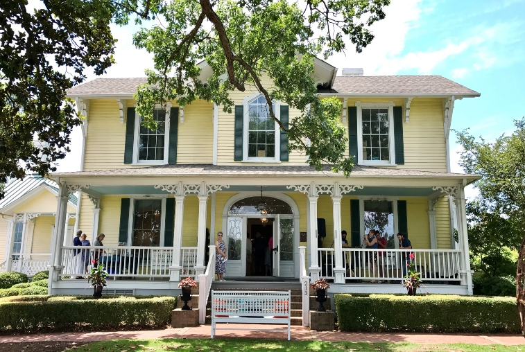
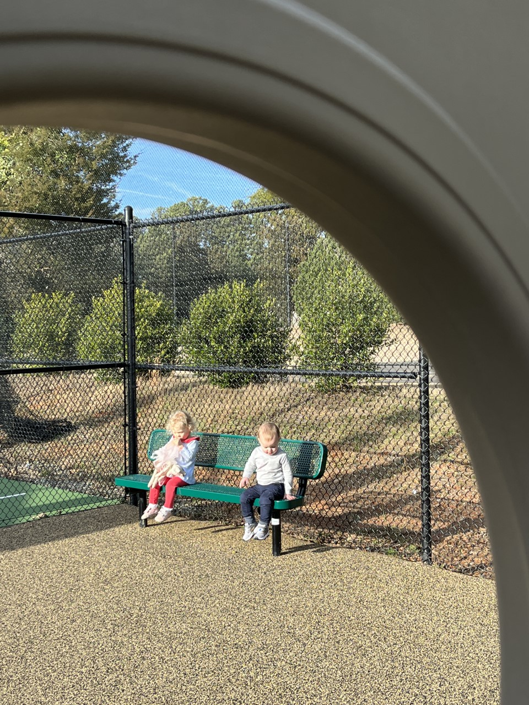

Maddie Foster
Maddie FosterAt Elon, I study Arts Administration and Strategic Communications with minors in Theatre Arts and Business Administration. I have already had a lot of professional opportunities with these majors, such as working as a social media manager for CITYROW, and indoor workout studio. As social media manager, I created content and pushed it out to the organization's publics on a schedule that I had created.

This past January, I completed a marketing and artist relations internship with Alamance Arts, a non-profit art gallery in Graham, N.C. In this role, I helped organize the Spring gallery as well as worked on the organizations' newsletter. In the future, I hope to work in social media and public relations for a concert venue or event space such as Madison Square Garden or PNC Arena.
Currently, I am a new tour guide at Elon and have already enjoyed the opportunity to share with other people what I love about the school. As a tour guide, I provide others with information about the campus and the admissions process.
In addition, I currently work as a nanny for two local families caring for their two year olds Anna Scott & Grey.

(804) 938-0631 mfoster29@elon.edu